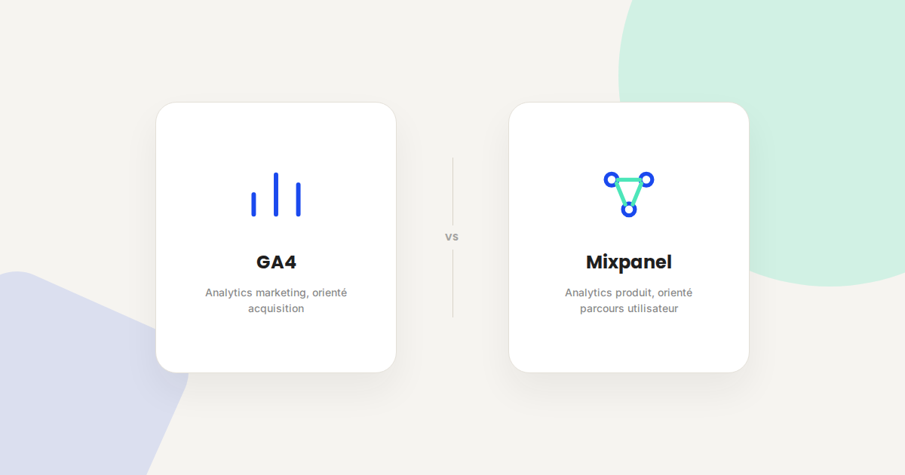
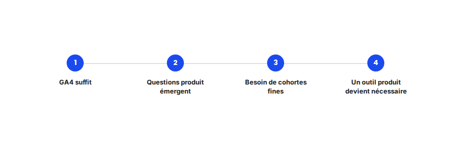

Mixpanel vs GA4 : quand l'analytics produit devient nécessaire
GA4 répond bien aux besoins d'analyse marketing — acquisition, canaux, conversions. Dès qu'il s'agit d'analyser en profondeur le comportement des utilisateurs à l'intérieur d'un produit digital, ses limites deviennent vite un frein. C'est précisément le terrain sur lequel un outil comme Mixpanel prend le relais.

GA4 et Mixpanel ne répondent pas aux mêmes questions, même s'ils mesurent tous les deux des événements utilisateur. Confondre les deux outils, ou attendre de GA4 des analyses qu'il n'est pas construit pour produire, est une source fréquente de frustration dans les équipes produit.
Ce qui ne change pas
Dans les deux cas, la fiabilité de l'analyse dépend directement de la qualité du plan de tracking mis en place en amont. La logique reste la même que pour Analytics en général : un outil puissant sur des données mal structurées produit des conclusions fausses, quel que soit le nom de l'outil utilisé.
Ce qui change vraiment entre les deux outils
- GA4 raisonne en sessions et en canaux, Mixpanel en utilisateurs et en événements. GA4 excelle pour comprendre d'où vient le trafic et comment il convertit ; Mixpanel excelle pour comprendre ce qu'un utilisateur fait précisément, dans quel ordre, sur quelle durée.
- L'analyse de cohortes est native sur Mixpanel, limitée sur GA4. Comparer le comportement d'utilisateurs inscrits en janvier à ceux inscrits en mars, sur plusieurs dimensions croisées, est un usage courant sur Mixpanel et laborieux sur GA4.
- La rétention par fonctionnalité est un point fort de Mixpanel. Savoir quelle fonctionnalité précise retient réellement les utilisateurs, au-delà de la rétention globale du produit, est une analyse que GA4 ne propose pas nativement.
- Le coût et la complexité de mise en place sont plus élevés sur Mixpanel. L'outil demande un plan de tracking événementiel plus rigoureux et un budget dédié, ce qui ne se justifie qu'à partir d'un volume d'utilisateurs suffisant.

Un exemple qui illustre bien la différence
Pour un client SaaS qui s'appuyait uniquement sur GA4, l'équipe produit ne parvenait pas à identifier pourquoi une partie des nouveaux inscrits abandonnait avant d'atteindre la première valeur du produit. La mise en place d'un tracking événementiel dédié dans Mixpanel a permis d'isoler précisément l'étape de blocage dans le parcours d'onboarding, une analyse que la structure de GA4 ne permettait pas d'obtenir avec la même précision.
Ce qu'il faut faire concrètement
- Gardez GA4 pour tout ce qui touche à l'acquisition et aux canaux marketing — ce n'est pas l'outil à remplacer sur ce périmètre.
- Envisagez un outil d'analytics produit dès que les questions posées dépassent GA4 : rétention par fonctionnalité, parcours détaillé, cohortes croisées.
- Construisez un plan de tracking événementiel rigoureux avant d'implémenter Mixpanel, plutôt que de dupliquer telle quelle la configuration GA4 existante.
- Faites coexister les deux outils plutôt que de choisir : ils répondent à des questions différentes et se complètent plus qu'ils ne se concurrencent.
FAQ
Peut-on remplacer complètement GA4 par Mixpanel ?
Ce n'est généralement pas recommandé. GA4 reste pertinent pour l'analyse marketing et l'attribution des canaux d'acquisition, un périmètre où Mixpanel n'est pas construit pour exceller.
À partir de quel volume d'utilisateurs Mixpanel devient-il pertinent ?
Il n'y a pas de seuil universel, mais l'investissement se justifie surtout quand les questions produit deviennent plus fines que ce que GA4 peut mesurer nativement — rétention par fonctionnalité, parcours détaillé.
Le tracking GA4 existant peut-il être réutilisé pour Mixpanel ?
Partiellement dans sa logique, mais un plan de tracking événementiel dédié et plus détaillé est généralement nécessaire pour tirer parti des fonctionnalités spécifiques de Mixpanel.
Envie de clarifier votre stratégie d'analytics produit ?
Pour aller plus loin, voir la page Amplitude / Mixpanel, la page Analytics, et la page Consultant GA4.
Pour continuer sur ce sujet.